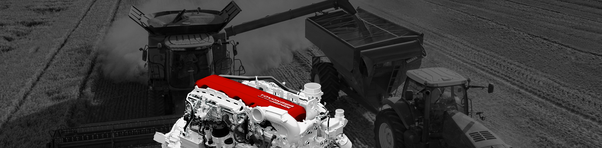

エンジンカタログ
パートナー
歴史
排出管理
連絡先
パーツ

更新されたルーラー
エンジン200から523
リットル。 と。
主なパートナー
トップ12パートナー
JLG
JLGは、世界でもトップクラスのリフト装置の開発および製造業者であり、JLG製品と顧客サポートスタッフは世界中で利用されています。
Hamm
ドイツの大手エンジニアリング会社でロードローラーを生産しています。 ドイツのTirschenreuthに本社を置く。 それはWirtgenの子会社です。
Dynapac
同社は、ロードミル、アスファルト舗装機、道路およびアスファルトローラーDynapac、振動ラム、振動板などの道路建設機器の世界有数の供給業者の1つです。 Svedala Demagのアスファルト舗装業者に対する特許がDynapacによって購入されたことにも注目しています。 これらの舗装業者は、Dynapac SDシリーズのブランド名で製造されています。
Matrot
Matrot Equipmentsは、農業従事者や農場経営者としての日々の作業を容易にするために、最も幅広い自走式噴霧器を製造しています。 自走式噴霧器マットは50年以上の経験の結果です。
Same
同じ会社は、1942年に兄弟FrancescoとEugenio Cassaniによって設立されました。 同社はドイツとイタリアでトラクター、コンバイン、ハーベスターを製造しています。 1996年以来、それは同じDeutz-Fahrグループと呼ばれています。
Escorts
エスコート建設機器株式会社 （™：ESCORTS、発音：エスコート）はインドの建設機械メーカーです。 ESCORTSの活動。 当初は、トラッククレーンの生産を専門としていたが、70年代後半には、掘削機やバックホーローダーで生産される装置の範囲を広げ、80年代後半には製品ラインにローラーローダーとローダーが登場した。
Kentavr
同社はベラルーシにあります。 主な活動は、ガソリンとディーゼルミニトラクターとモーターブロックである小型農業機械の生産に関連している。 同社は添付ファイルも作成している。
Tafe
Massey Fergusonのインド生産拠点として、Tractors and Farm Equipment（TAFE）（トラクターと農業用機器）という会社が設立されました。 今日、TAFEはMassey（AGCO）と独自のデザインの両方をトラクターとして生産しており、インドや世界各地で販売されています。
Indo Farm
Indo Farm Equipment Limitedは、ヒマチャル・プラデーシュ州にあるISO認定企業で、世界トップレベルのトラクター、クレーン、エンジン、ディーゼル発電機の製造に従事しており、最近は湿地採取用のHarvester Agricom 1070ハーベスターを発売しました。
Antonio Carraro
同社の主な特化は、コンパクトで多機能なトラクターの生産です。 各トラクターは、本質的に多機能であり、多くのプロセスを実行することができる。 今日、同社の生産エリアは350,000人を雇用して10万m²を占めています。
Takeuchi
同社は、中型油圧ショベル、ミニショベル、クローラーミニローダー、ダンパー（ミニダンプ）、アタッチメント（特に油圧ハンマー）などの建設機械を製造しています。
Flagman
Flagman - 小規模農業機械製造の世界的リーダーであるGoldoni（イタリア）の子会社。 FlagmanモーターブロックのガソリンモデルはToyokawaの日本エンジンを搭載し、ディーゼルエンジンは日本製のYanmarを搭載しています。
フィードバック
送信